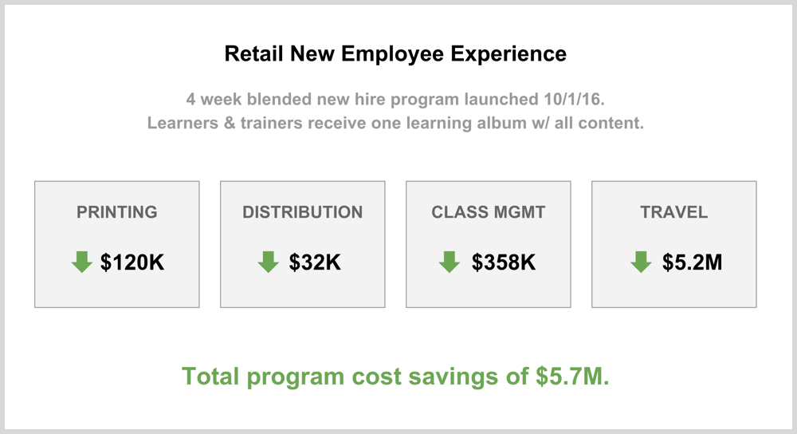
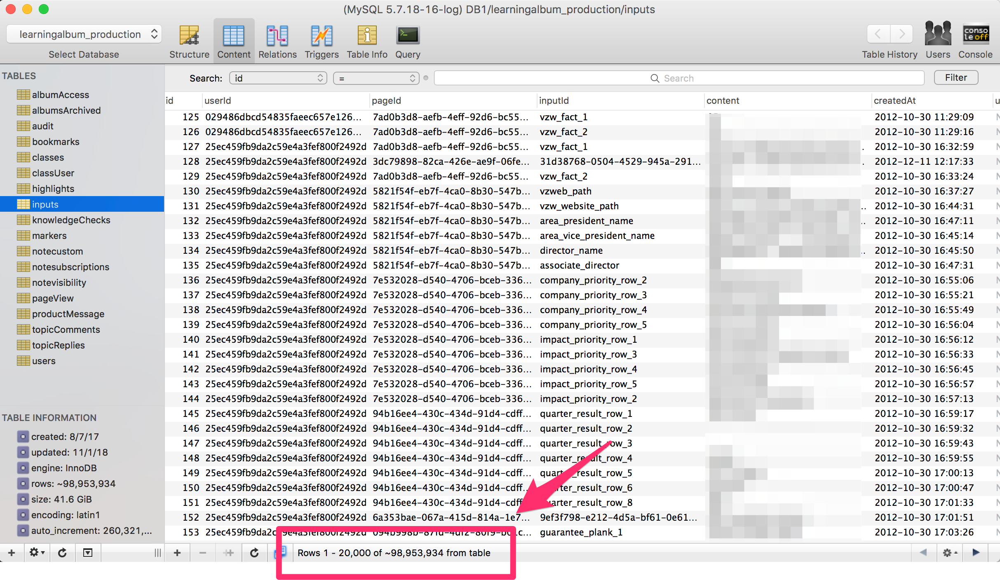

Delivery
Video tour of version 6, which launched in 4Q 2018.
Artifacts:
• Market analysis
• ROI analysis of MVP
• Learning Album Active Users report
• Kano study readout
• Kano survey results
• Content Feedback project brief
• Participant assignment mockups (created by designer)
• Facilitator assignment mockups (created by designer)
Business challenge
Like most organizations, Verizon HR produced printed participant and leader guides for use in instructor-led training courses (60% of training delivered). But as the business began its digital transformation in earnest, printed training materials posed a number of challenges:
- They grew outdated almost as soon as they were printed, generating significant waste — and no one wanted to lug home a binder or stack of papers after training was over.
- There was no guarantee people were even using the most recent versions of documents in class.
- They locked HR into traditional classroom delivery models.
- They could provide no data about how they were used or whether they delivered real value.
With more employees in more locations than ever before — and the rise of virtual and remote training — Verizon needed to change the way it produced learning materials.
Our solution
I knew we could solve this problem by creating a digital product that was mobile-friendly, accessible from any device, and able to be refreshed seamlessly whenever content needed to be updated. After conducting a market analysis and concluding there was no product available that met our need, I persuaded senior leadership to give us a month to create an MVP.
The first version of the "Learning Album" (late 2011) was a native iOS app that had to be manually sideloaded into an iPad. It was created for just a single Technical Support course, but soon other channels were asking for their own learning albums and I won budget to begin expanding the team (an early ROI of 54% helped convince Finance). As product manager, I set the strategic vision for the application, created roadmaps, consulted with stakeholders, wrote user stories, groomed the backlog, and provided end user support.
By the time we launched version 5 in late 2014 (video above), we had turned the Learning Album into a complete end-to-end enterprise eTextbook platform hosted in the cloud, with advanced real-time collaboration features and learning analytics. At that point, I assumed leadership of the entire software development team (13-15 people). My mission was to scale the platform across the entire global enterprise, so that every instructor-led training at Verizon was delivered through our platform.
Business impact
To a large extent, we succeeded in our mission. Nearly 60% of all training (90% of instructor led) occuring at Verizon used our platform. For a better picture, here's a report from Google Analytics on active users from September 2014 (when we launched v5) to October 2018.
Learning Album Active Users (Historical)
Achieving this scale allowed us to reduce Verizon training expenditures over $7 million by eliminating print and distribution costs, streamlining content management processes, and reducing the need for travel to training sessions. One specific example of this impact involved the Verizon Wireless retail store onboarding program, where we reduced costs by over $5 million:

Basic formulas used to calculate these results:
- Printing: $40 per participant guide x 3000 participants
- Distribution: 2.75 hours per class x $43 / hr trainer all-in salary x 275 classes
- Class Mgmt: (10 hours per class x 1 trainer x $43 trainer salary x 275 classes) + (4 hours per participant x 3000 participants x $20 rep salary)
- Travel: $1749 per participant x 3000 participants
The above are results for just one program created in the platform. There have been over 1,700 albums published since 2014, 750 of which are actively used each year.
The next step
We realized in 2015 that we had already outgrown the technology used to build the current platform. One table alone had grown to nearly 75M rows (now almost 100M)! Needless to say, this was starting to impact performance.

So I made the decision to rebuild the platform from the ground up. We would be using new technology at every layer of the stack, from the database all the way up to the front end UI. It would be a long, hard process. But the new stack would provide a necessary foundation for future innovation.
The rebuild would also give us an opportunity to introduce new features that we and our customers had been dreaming about for years. Of course, we wouldn't be able to implement them all, so I had to decide which ones to include. I used the Kano prioritization technique to assist in that process. Here are the two primary artifacts I generated:
Kano Readout
Kano Survey Results
This process really helped us focus on those features that would deliver the most value for our users. Based on this work, I decided to include 4 of the highest scoring features in the new version.
At that point, I took each feature and performed a deeper analysis. This resulted in project brief documents. Project briefs are like shorter BRDs that team members will actually read (or so I hope). I produce one of these every time we're serious about developing a new feature. Here's one example:
Content Feedback Project Brief
Project briefs in hand, leadership on board, budget secured, we began work on the rebuild. Nearly two years later, we launched version 6 of the platform in 4Q 2018. The video on the left provides a brief tour of the Delivery application.
2019 and beyond
Through conversations with peers at industry events, I knew other Learning & Development organizations were struggling to digitize their learning content. I pitched my Vice President of Learning and the Vice President of HR on the prospect of commercializing the Learning Album.
My leaders were persuaded and arranged for me to pitch the President of Verizon Enterprise Solutions. In December 2017, I did just that, delivering this deck:
I won approval to move forward with leveraging our platform on enterprise customer deployments. I began working with our adoption services team on how to integrate our platform with other customer education tools already in place. This initiative will be pursued in 2019 once version 6 of our platform is completely hardened and ready for multi-tenant use.
In addition to enabling multi-tenant use for customer deployments, there are several big opportunities on the long term roadmap:
- Personalization — Rather than the traditional one-size-fits-all approach, learners take a pre-assessment that customizes album contents based on their score. Pre-assessments are a combination of quantitative and qualitative measures. Our target is to reduce instructional time in the app by 25%. That's an annual savings of 400,000 hours that employees can instead use selling to and supporting Verizon customers. Once manual personalization is established, we'll look to leverage AI and machine learning capabilities to customize learners' albums based on actual job performance and to automatically grade their assignments whenever possible.
- Text & Video Chat — Personalization means less traditional classroom facilitator led training. When on their personalized journeys, learners may still need a way to get help from human facilitators. This functionality lets them engage with facilitators or peers without leaving the learning app. This is critical to unifying the experience and establishing a level playing field across internal employees and external partners who may be using the same learning programs.
- Scheduled Learning — Learners get busy and can't complete their training programs in one sitting. Scheduled learning lets them set up a schedule, including how many days a week they want to learn and how much time they want to spend each day. Based on their settings, the app will send them regular snippets of content and reminders to continue completing their learning programs.
For those interested, here is our technology stack for the latest version (6) of the Learning Album platform:
Docker 18+, Node.js 10+, MySQL 5.7+, PostgreSQL 10+, Redis, AWS EC2, AWS RDS (MySQL and PostgreSQL), AWS Lambda, AWS S3, AWS SES, AWS SNS, AWS SQS, GraphQL, React.js, reactstrap, New Relic.